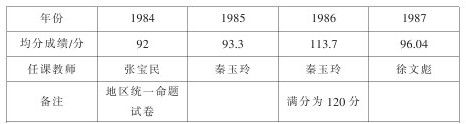

学习尝试教学法，走改革之路 [1] ——灵武县学习、运用尝试教学法情况的回顾
尝试教学法是邱学华同志亲自倡导并积极组织实验、推广的一种新型的教学法。近几年来，随着灵武县教研活动的深入开展，这种教学方法越来越被广大小学数学教师所接受。据初步统计，在全县535名小学数学教师中运用尝试教学法的有256人，占总数的48%，其中运用较好的有48人，一般的有175人。班级284个，占班级总数的33.3%，基本上形成了一支有一定规模和骨干力量的尝试教学法实践队伍。从1984年到1987年初中招生数学均分获全县第一名的教师（如下表）来看，都是最早接受和大胆运用尝试教学法的青年教师。

1986、1987年写出尝试教学法经验材料、论文26篇，区、地交流8篇，获奖4篇，被外省教育刊物录用1篇。县级举行公开教学14节，获“优质课”奖8节。
回顾灵武县尝试教学法学习与运用过程，大体经历了三个阶段：第一是探索学习阶段；第二是实践深化阶段；第三是创新发展阶段。
一、探索学习
党的十一届三中全会以后，随着全党工作重心的转移，教育进入了一个新的发展时期。如何提高基础教育的质量，不仅广大教师而且各级政府也十分重视。数学大纲又规定：“小学数学教学，要使学生不仅长知识，还要长智慧。”明确提出了培养能力的要求。如何按大纲要求完成教学任务，培养新时期的有用人才，很多教师在思考，在寻找途径。邱学华同志《尝试教学法的实践和理论》一文的发表，犹如及时雨，使我们顿开茅塞。尝试教学法不仅符合儿童的心理特点，而且对教师（尤其是青年教师）也有吸引力，产生了强烈的“试一试”的欲望。经过实践（尽管当时还是机械模仿阶段），证明了这种方法确实简单易学，教学也有一定的成效。后来邱学华同志的《再谈尝试教学法》又为我们解释了许多问题，使我们对尝试教学法的实质、取得良好效果的原因、如何面向中差生、怎样编拟尝试题等有了明确的认识，更增强了我们学习、运用尝试教学法的信心，同时也感到尝试教学法在我县是能够推广的。1985年暑期，邱学华同志应邀到银川讲学，通过言传身教，使我们在理论和认识方面又有了新的提高。那次灵武县虽然只去了二十人，但对推广尝试教学法起了积极作用。县教研室因势利导，专门成立了尝试教学法实验领导小组，由许丛仁主任任组长，拟定了开展计划，确定了实验点，将自发的个人的局部的尝试纳入了正规，使尝试教学法在我县有组织、有计划地展开。
二、实践深化
随着尝试教学法学习与实践的不断深入，我们教研的主题和侧重点也在不断变化。起初，我们解决的是认识问题，后来是教材问题，现在是理论问题。
尝试教学法能不能被广大教师所接受，这是一个认识问题。有些教师工作兢兢业业，每天从早到晚，忙忙碌碌，教学成绩不太显著，有些教师怨天尤人，说：“我教到死，学生还是不会。”还有的说：“我接这个班，倒霉死了，学生太笨，简直像木头似的。”有的教师对新的教学方法持怀疑态度，总是忧心忡忡，认为老法保险，新法危险，怕“考糊了”，怕“砸锅”等等。为了解决这些认识问题，我们一方面加强了业务学习，提高思想认识，从尝试教学法的理论问题上给以渗透，帮助教师转变教学思想，摆脱旧观念旧做法的束缚，促进课堂结构的改革。另一方面努力钻研教材，培养学生的探索精神，自学能力，从而达到提高教学质量的目的。与此同时，我们还抓点带面，通过现身说法引领大家。1984、1985年杜木桥民族班数学均分成绩居全县之首，主要就是重视教法改革，以教研促进教学的结果。1985年十二月，全县在杜木桥中心小学举行了尝试教学法观摩课，秦玉玲老师讲了《长方体的表面积》，这一方面是对尝试教学法中局限性的突破，另一方面又把学生实际操作法灵活地进行了应用，课堂容量大，效果好。在课后评议中，许多教师啧啧称赞。郝桥中心小学教导主任马锡族说：“照这样的教法，照这样的课堂教学效率，明年这个班肯定又是全县第一。”果然不出所料，在1986年初中招生考试中，这个班又以113.7分的均分成绩在全县夺了魁。那次观摩课给许多教师以启迪，对尝试教学法的普及起了重要的推动作用。
尝试教学法用得好不好，主要是看教师对教材的掌握情况。数学教材系统性很强，每一部分知识都具有两重性，它们既是前面所学内容的继续和发展，同时又是后面知识的基础和前提，尝试教学法最适应后继教材，其关键又在于准备题的设计。因此，教师只有潜心钻研教材，掌握了教材的知识结构，才能根据新旧知识之间的内在联系恰当地设计准备题，为学生学习新知识铺路搭桥，以达到“以旧引新”的目的。去年教育科在制定学年工作计划的时候，把教材过关列为教研活动主要内容，提倡“三级备课”。通过学期总教学计划的制定通览教材，通过单元教学计划的制定掌握教材所处的地位、重点、难点等；通过课时备课实施教材，完成教学目的与要求。杜木桥学区、郝桥学区、梧桐树学区、郭桥学区由于重视教材过关，对大面积提高教学质量起了积极地促进作用，梧桐树学区1987年初中招生成绩大幅度上升，其主要原因就在于此。
尝试教学法在运用过程中，是否有新意，主要是理论指导问题。俗话说“熟能生巧，巧能生花”，只要掌握了尝试教学法的实质，驾驭了教材，就能有教学的主动权，就能从必然王国走向自由王国。当然这就需要善于学习，善于总结经验，用先进的理论作指导，大胆探索，不仅要知其然，还要知其所以然。如：尝试教学法一般是五个步骤，那这五个步骤的内涵和外延是什么呢？这五步仅仅是一堂课中“进行新课”的几个步骤，那么其他环节又是什么呢？它们各自的作用怎样发挥呢？最佳课堂教学体系包含哪些内容？等等，这些都是需要我们认真研究和通晓的。1986年四月份全区第一次尝试教学法研讨会，秦玉玲老师写了《尝试教学法学习与实践》一文，她从三个方面谈了自己的教学体会：1.尝试教学法的最佳课堂教学体系；2.对尝试教学法基本过程的认识；3.尝试教学法的实验（有概念教学、四则计算、应用题教学、形体教学）。这篇文章虽然篇幅较长，但她从整体方面较系统地总结了自己运用尝试教学法的体会，认识深刻。（灵武县《教学研究》八六第二期已全文登载转发。）1987年六月份，在自治区第二次尝试教学法研讨会上，灵武县送交了四篇论文（其中有一篇教案），已从局部围绕尝试教学法中的各个环节深入探讨。杨存葆老师《良好的开端是成功的一半》——谈“六段式”课堂结构中的基本训练，在大会上进行了交流，并评选为地区优秀论文。他从三个方面谈了基本训练：1.基本训练肩负着四重任务。不是组织教学胜似组织教学。是培养学生基本能力的重要手段。是新课堂教学的“奠基工程”。要为师生创造一个良好的心境。2.基本训练的内容应该由两部分组成：即计划性训练（基本功训练）和准备性训练。3.基本训练的设计也应遵循“由浅入深，由易到难”的原则。秦玉玲老师写的《浅谈尝试教学法中准备题的设计》，她谈了三个问题：第一，准备题的设计要符合新授课的知识结构。第二，准备题的设计要符合学生的认知结构。第三，准备题的设计尽可能的是学生探索新知识时所能及的最近发展区。张宝民老师写的《根据尝试教学法设计“按比例分配应用题的练习”》被《湖南教育》刊用。他主要结合“按比例分配应用题”谈了多层次练习问题，最近他又写了《“三论”与尝试教学法》，从理论上对教学过程中的几个问题进行了阐述：1.应用整体原理制定教学目的及为总目的服务的分目的。2.应用反馈原理编写层次练习。3.应用有序原理促使知能融合，发展学生智力。4.一法为主，多法配合。这对尝试教学法向更高水平发展和研究起到了促进作用。
“实践出真知”，尝试教学法的学习和应用从整体到局部，从过程到细节，完全是一个“认识—实践—再认识—再实践”的过程，它需要理论的指导，相反又促进理论深化，它们间的相互作用必将把尝试教学法的实践推向新的境地。
三、创新发展
研究尝试教学法的目的还不仅仅在于它本身，也不能停留在现有的水平上，而是以此为突破口，来推动和促进整个教育思想，教学方法的改革。从我县基础教育的现状来看，由于历史的原因，由于教师素质的不同和条件的各异，全县发展很不平衡。大部分同志还用汗水加时间来提高教学质量的，有的同志（特别是老教师）还习惯传统的教学方法，思想比较禁锢；还有的同志（如部分招聘教师）虽有教学热情，但还不太入门，还把握不准大纲要求。因此，我们现在研究的课题是：
1.探求既不加重师生负担，又要提高教学质量的途径，逐步使教学工作科学化、定量化。
2.如何应用情景教学法，使学生寓学于乐中，在最佳的心理状态中学习，提高课堂教学效率。
3.如何根据复式班教学特点，采用新的教学方法。
4.中学的理科和小学的语文、史地等课怎样使用尝试教学法，突出“先练后讲，练在课堂”，培养学生的自学能力和探索精神等。
目前，我们正在进行着运用“迁移法”进行教学的试点，进行着电化教学的试点，还积极准备扩大实验课题，目的就是不断探索出符合我县实际的教学法体系来，切实为提高基础教育质量，为提高民族素质做出努力。
总之，我们学习、运用尝试教学法的过程，实际上就是一个探索过程，我们每走的一步，正如尝试教学法的名字一样，是尝试之路。现在我县虽然推行尝试教学法时间不长，但已展现出了美好的前景，随着教育改革的深入，尝试教学法一定会产生越来越大的影响。
“一花独放红一点，万紫千红春满园”，灵武县已经迎来了教法改革的春天，我们期待的是——硕果累累的秋天！